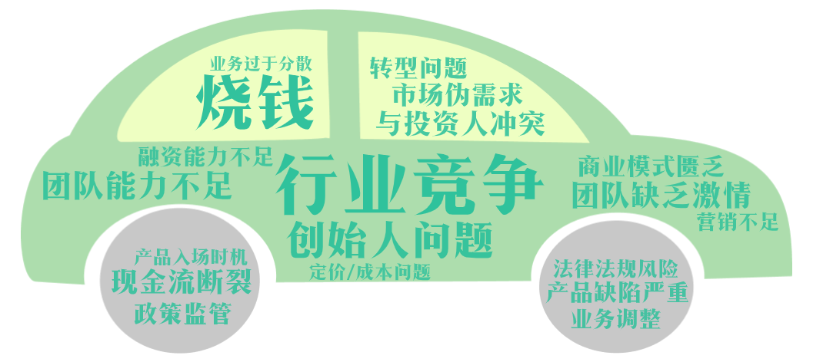
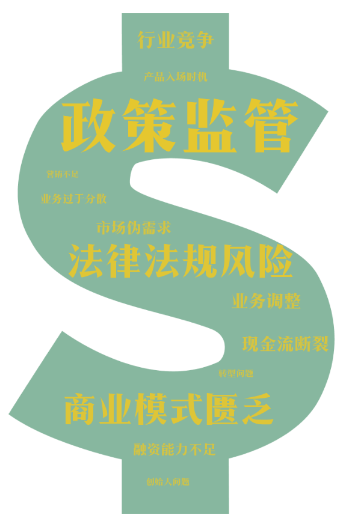

拖动时间轴上的箭头，即可探索每年各行业死亡的公司数量。
拖动时间轴上的箭头，即可探索每年各行业死亡的公司数量。每一年都有不计其数的新经济公司死亡，那么他们都是因为什么原因倒闭的呢？
将死亡原因分成6个大类，由死亡数量排序分别是 市场定位 、外部问题 、资金问题 、产品问题 、运营问题 、团队问题 。
这6个大类，又可以细分为20个小类，分别为：
- 商业模式匮乏、市场伪需求、业务调整、业务过于分散
- 行业竞争、政策监管、法律法规风险
- 现金流断裂、融资能力不足、烧钱
- 产品入场时机、产品缺陷严重
- 定价/成本问题、营销不足、转型问题、不重视客户
- 创始人问题、团队能力不足、团队缺乏激情、与投资人冲突
其中绝大多数行业的公司的死亡原因中，致死率最高的是“商业模式匮乏”。例如广告营销行业因为商业模式匮乏而死亡的公司占比高达42.8%，其次是工具软件行业，占比34.1%。
但是也存在着例外，分别是汽车交通行业和金融行业。
汽车交通行业致死率最高的死亡原因是“行业竞争”。例如共享单车，作为汽车交通行业的代表性分支之一，就曾经是风口行业。“一夜之间”，各种共享单车企业如雨后春笋般涌出，而后过不了多久，就在行业竞争中死亡了一大片。就连共享单车巨头ofo，也未能幸免。

而金融行业死亡原因最多的则是“政策监管”。新经济公司金融行业中有很大一部分是网贷公司。大学生裸贷、315晚会爆出的“714高炮”，以及各种卷钱跑路的P2P网贷平台，这一系列丑闻揭露了网贷行业的乱象，显示了政府监管的必要性。所以政府的监管，成为了金融行业死亡原因占比最高的原因。

不同的行业因为有着其自身特点，所以有着不同的死亡原因。那么，对于不同的融资轮次，死亡的原因是否有所差别呢？从图中可以看出，从”尚未获投“一直到”C轮“，死亡公司的数量逐级递减。
在尚未获得投资和天使轮死亡的公司中，死亡原因排名第一的是市场定位，而到了A轮和B轮，排名第一的死亡原因则变成了外部原因。
值得注意的是，团队问题(方块所表示部分)这个死亡原因在不同轮次(天使轮->A轮->B轮->C轮)中所占的比例，也逐步提高。说明公司越发展到后期，团队问题愈显重要，可能成为一个容易被忽视但却致命的因素。

在“激烈”的新经济公司死亡赛道中，究竟是哪些公司拔得头筹呢？让我们来一起揭秘新经济公司排行榜之最🏆。
韦博英语
上榜理由：存活时长高达21年
- 1998 韦博英语创立。
- 2017.11 双十一期间韦博英语成交位列语言培训行业销售排行第一。
- 2019.10 韦博英语多家门店相继停止运营、员工被曝出拖欠薪资。
韦博英语人去楼空、员工欠薪未发、学员退费无门，21岁“高龄”的昔日培训巨头竟沦落到如此地步？
据韦博英语创始人高卫宇发表的公开道歉信表示，韦博英语由于原本的融资计划因业绩持续恶化，以及近期各类负面舆情影响不断被推迟，带来了资金链断裂，导致公司无法正常运营下去。可是曾经的培训巨头， 是怎么沦落到这一步呢？
1. 没有及时转型
1998年韦博英语成立，正好是改革开放后外资企业进入中国与出国热的第一波高潮，因此韦博英语捕捉到了这波成人英语培训的市场红利。然而在二十多年后的今天，在现在高度重视英语的大环境下，英语已经都从娃娃抓起，英语培训的主力在20年间已经慢慢从成人下沉到了娃娃们， 这注定导致了成人英语培训市场的萎缩，而韦博英语主打成人英语培训，明日黄花已成必然。
2. 盲目扩张，现金流断裂
同时，韦博英语还涉嫌诱导学员使用网络贷款来一次性缴足学费，并利用这些钱来进行门店的快速扩张，导致入不敷出，现金流断裂，融资计划也未能成功。 不少学员使用了韦博英语推荐的互联网金融产品，现在却竹篮打水一场空，他们面临着既上不了课，又退不了钱还必须每个月还贷款的三重困境中。 最终一家21年的老企业，带着连续不断的负面舆情，欠着学员的一屁股债，黯然离场。
卡拉单车
上榜理由：上线时间19天即倒闭
- 2016.10 卡拉单车团队组建
- 2017.2 卡拉单车表示，公司在1个月内分两批次，分别投放了500辆和167辆单车，但最终只找回157辆车，丢失率为76.5%
- 2017.3 卡拉单车关闭
上线19天就倒闭，共享单车创业心酸史
卡拉单车，用19天时间在莆田市投放了667辆车，结果丢失大半，只找回来157辆车，丢失率76.5%。投资人立马全额撤资，导致公司不能不面临倒闭。
让投资人管账的“职业经理人”式创业不可取
卡拉单车创始人与投资人签订的协议是让投资人管理财务，自己做“甩手掌柜”。 在公司危难时刻，投资人居然可以从用户的押金池里面把全额投资款抽出来带走，并且撤走了财务和客服，这样的行为不仅直接导致了公司的破产，还将所有的风险全部转嫁到用户身上。所以“职业经理人”式创业让卡拉单车陷入了如此被动的境地。
酷骑单车
上榜理由：存活379天 融资10亿元 日均烧钱263.85万 排名第一
- 2016.11 酷骑单车成立
- 2017.9 因押金难退，多处运营单位与工商局失去联系等问题，部分地区已开始对酷骑单车进行清理。
- 2017.12 中国消费者协会公开发文，称截至12月11日，仅针对酷骑单车的投诉就超过21万次，涉及金额10亿多元。
- 2019.7 据用户投诉，在2019年7月12日，酷骑单车公布的显示退押金专线3个电话已经全部停机。
共享单车行业已到寒冬，烧多少钱也没法取暖
资金链断裂，成了压死酷骑单车的最后一根稻草。曾经的ofo，在行业竞争中，打败了多少共享单车创业公司和中小投资者，如今它也变得苟延残喘。
酷骑单车与ofo一样，都面临着押金退不出来的困境。针对酷骑单车的投诉连续不断，涉案金额庞大，高达21亿元。作为受害者之一，以后类似的押金收取形式我们应当慎之又慎。
资金链断裂，成了压死酷骑单车的最后一根稻草。曾经的ofo，在行业竞争中，打败了多少共享单车创业公司和中小投资者，如今它也变得苟延残喘。
酷骑单车与ofo一样，都面临着押金退不出来的困境。针对酷骑单车的投诉连续不断，涉案金额庞大，高达21亿元。作为受害者之一，以后类似的押金收取形式我们应当慎之又慎。
团贷网
上榜理由：融资榜第一 24.75亿元
- 2012.7 团贷网上线
- 2017.9 团贷网创始人兼CEO唐军成为新三板上市公司光影侠第一大股东和实际控制人。
- 2016.3 平台累计交易量近160亿元，平台的投资注册用户超过240万人，为投资人赚取了超5.2亿元的收益。
- 2019.3 东莞市公安局发布情况通报，团贷网实际控制人唐某、张某主动向东莞市公安局投案。
团贷网涉嫌非法吸收公众存款已被立案侦查，唐军作为实控人已经投案自首。一场游戏一场梦，一位年纪轻轻、身价上亿的八五后CEO，转眼发生了身份的巨变。
投资有风险，互联网金融更需谨慎
团贷网的“权威性”——推荐人分析的头头是道、别人投我也投的“从众思想”让很多民众入了“大坑”。高新手标年化收益率，更是让人心动。 所以要做投资，一定要深刻反思时时警惕做好风险预警。要甄别不可盲目跟投也不相信空头“承诺”，充分的了解深入的分析后在对其投资，如没办办法分辨，建议规避风险。 同时也应该推动互联网金融大数据与征信系统结合，建立更好的社会征信体系。
投资有风险，互联网金融更需谨慎
团贷网的“权威性”——推荐人分析的头头是道、别人投我也投的“从众思想”让很多民众入了“大坑”。高新手标年化收益率，更是让人心动。 所以要做投资，一定要深刻反思时时警惕做好风险预警。要甄别不可盲目跟投也不相信空头“承诺”，充分的了解深入的分析后在对其投资，如没办办法分辨，建议规避风险。 同时也应该推动互联网金融大数据与征信系统结合，建立更好的社会征信体系。
快播
上榜理由：IT桔子上香榜排名第一 705柱
- 2007.12 深圳快播成立
- 2009.1 深圳快播获得软银赛富数百万美元A轮投资
- 2011 快播成为了全中国市场占有量第一的播放器
- 2016.9 快播公司及主管人员涉嫌传播淫秽物品牟利被审理，快播王欣获刑3年6个月
- 2018.9 深圳中院裁定快播破产清算,即日生效
快播曾被喻为“宅男的青春”。所以快播在上香榜上排名最高，也是情有可原。
当年，王欣在辩护时提出的“技术无罪”论得到了绝大多数网友的认同，但是也并没有改变结局，快播还是败诉了，王欣被判入狱3年6个月。
时过境迁，现在的我们都已经承认一个公司有义务对用户的行为负责。正如滴滴的顺风车杀人案件，滴滴也必须站出来挨打。所以快播的倒闭虽然令人惋惜，但有其历史必然性。